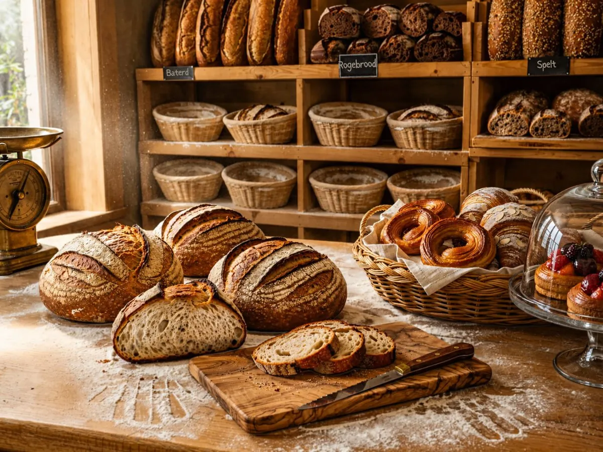

De 10 beste bakkers in Nijmegen
Bijgewerkt op 20 november 2026.
Een goede bakker zoeken in Nijmegen? De stad heeft er meer dan je denkt: desembakkers die hun brood een hele dag laten rijzen, banketbakkers die al generaties meegaan en patissiers die gebak maken dat te mooi is om op te eten. Wij kozen tien bakkers uit onze bedrijvengids die elk iets bijzonders doen, voor je dagelijkse brood, een gebakje bij de koffie of een taart voor een feest.

Zo hebben we gekozen
We liepen in oktober 2026 de websites na van de bakkerijen in onze bedrijvengids. We keken naar wat ze zelf bakken, waar ze in uitblinken en wanneer je er terechtkunt. We kozen een mix van broodbakkers, banketbakkers en taartenmakers, verspreid over de stad. Recensies en claims over het 'beste' brood telden niet mee.
1. BRodijnen: desembrood op de stenen ovenvloer
In de Lange Hezelstraat bakt Erik van Rodijnen elke dag desembrood dat een hele dag de tijd krijgt om te rijzen. Het gaat direct op de stenen vloer van de oven, zonder kunstmatige toevoegingen. Dat geeft een knapperige korst en een volle smaak die niet zuur is.
Hij werkt met biologische granen en meel van molens. Naast grote en kleine desembroden vind je er zoete lekkernijen en koek. De winkel is open van woensdag tot en met zaterdag, van 10.00 tot 16.00 uur, en je kunt ook vooraf online bestellen.
Goed voor: liefhebbers van echt desembrood.
2. De Knollentuin: biologisch sinds 1974
De Knollentuin in de Fransestraat bakt al sinds 1974 alles zelf, en alles is biologisch en vegetarisch. De granen worden op molenstenen gemalen. Je vindt er desem- en gistbrood, croissants, focaccia en seitanbroodjes.
Met een dieetwens ben je hier goed af: er is glutenarm brood, op woensdag koolhydraatarm brood, en bijna al het grote brood is vegan. In de winkel liggen ook zuivel uit de Ooijpolder, muesli en sappen. Doordeweeks open vanaf 8.30 uur, op zaterdag tot 15.00 uur.
Goed voor: wie biologisch eet of een dieetwens heeft.
3. Bakkerij Holland: ruim veertig soorten brood
Aan de Sint Jacobslaan staat elke dag een bakker in de winkel, dus je kunt gewoon vragen welk brood het beste bij je ontbijt past. Dagelijks gaan er ruim veertig soorten brood de oven in.
Het paradepaardje is het FIER!-desembrood, dat op vrijdag, zaterdag en zondag vers wordt gebakken, in acht vaste varianten. Verder vind je er kleinbrood, schnitten, gebak, vlaaien en taarten, en je kunt vooraf bestellen en afhalen.
Goed voor: een grote keus in brood, en vers desembrood in het weekend.
4. Holy Sweets: Franse patisserie
Holy Sweets in de Houtstraat maakt elke dag gebak uit de moderne Franse patisserie: eclairs, macarons, bonbons, taarten en viennoiserie. De productieruimte is open, dus terwijl je wacht zie je je gebakje ontstaan.
Fondant en marsepein gebruiken ze hier niet. Ze werken met glanzende glazuren en strakke vormen. Voor een bruiloft denken ze mee over een sweet table of een stapeltaart. Open van dinsdag tot en met zondag.
Goed voor: een bijzonder gebakje of een moderne bruidstaart.
5. Strik: banket sinds 1937, met proeverij
Strik is sinds 1937 een Nijmeegse banketbakker en is inmiddels ook chocolaterie en ijssalon. In de winkel aan de Ziekerstraat kun je blijven zitten voor de proeverij: een dessertje, friandises bij je koffie of een ijscoupe.
Alles wordt zelf gemaakt, van themataarten en koekjes tot brood en fruitgebak. De speculaasbrokken zijn in de prijzen gevallen. Strik heeft ook winkels aan de Heyendaalseweg, de Daalseweg en het Oranje Marieplein in Lent.
Goed voor: gebak bij de koffie, en een taart voor een feestje.
6. Looijenga: bakken sinds 1830
Aan de Berg en Dalseweg wordt al sinds 1830 gebakken. Looijenga is banketbakkerij en chocolaterie tegelijk: je haalt er gebak, taarten en chocolade, en je kunt ook online bestellen.
Ga je trouwen, dan bespreek je je bruidstaart op de zaak, met koffie en een gebakje. Er zijn ook workshops en kinderfeestjes. Van april tot oktober is er aan de zijkant van de winkel een ijsloket.
Goed voor: een klassieke bruidstaart en chocolade als cadeau.
7. Marcus: vroeg open en chocolade figuren
Aan de Hatertseweg gaat de deur van Marcus om 7.00 uur open, van maandag tot en met zaterdag. Handig als je op weg naar je werk nog verse broodjes wilt halen.
Naast broodjes, vlaaien en taarten maakt Marcus veel chocolade, waaronder figuren als een schaakspel, een racefiets, een camera of een piano. Een leuk cadeau voor iemand met een hobby. Bestellen kan in de winkel of telefonisch.
Goed voor: vroege vogels, en een origineel chocoladecadeau.
8. 't Kraayennest: steenovenbrood in de Wolfskuil
In de Wolfskuil heeft familiebakkerij 't Kraayennest een winkel aan de Fuchsiastraat. De bakkerij gaat al vier generaties van vader op zoon. Het paradepaardje is Steengoed Brood uit de eigen steenoven, en er wordt nog veel met de hand gedaan.
Je vindt er ook banket en gebak, en er is aandacht voor lactose- en glutenvrij brood. Wat overblijft gaat onder meer via Too Good To Go en de voedselbank weg. Open zes dagen per week, en op zondagochtend van 8.30 tot 11.30 uur.
Goed voor: verse ontbijtbroodjes op zondagochtend.
9. Trash'ure Taarten: plantaardig en gered
Trash'ure Taarten bakt alles plantaardig, met groente en fruit dat anders zou worden weggegooid en met lokale biologische noten en granen. Denk aan een wortel-sinaasappeltaart of een herfsttaart met Biscoff en geredde pompoen. In de bakkerij worden vluchtelingen opgeleid tot vakmensen.
Je bestelt online. Doe je dat voor 11.00 uur, dan haal je je taart de volgende dag op aan de Cargadoorweg of laat je hem bezorgen binnen zo'n tien kilometer. Ook bruidstaarten op maat zijn mogelijk.
Goed voor: een vegan taart voor een verjaardag of op het werk.
10. ZOET: taarten op bestelling
ZOET aan de Broerdijk maakt alles op bestelling, afgestemd op jouw thema, kleuren en smaken. Bruidstaarten zijn de specialiteit, maar je kunt ook een sweet table laten maken met cupcakes, brownies, cheesecakes en cakepops.
Omdat het team klein is, is er per week maar beperkt plek voor bestellingen. Kijk dus op tijd of jouw datum nog vrij is. Je haalt je taart op in de bakkerij, op zaterdagochtend of op afspraak.
Goed voor: een taart op maat voor een bruiloft of babyshower.
Ook lekker
- 't Kraayennest heeft ook een winkel aan de Laauwikstraat in Lent.
- Van Eigen Deeg: plantaardige koeken met geredde grondstoffen, uit een proefbakkerij aan de Roggeweg. Een leuk brievenbuscadeau.
- Madaq in de Pauwelstraat: handgemaakte bonbons en macarons met smaken uit de Arabische keuken.
- De oliebollenkraam op Plein 1944 staat er van 20 november tot en met oudejaarsdag.
Alle bakkers staan in de bedrijvengids onder bakkerijen. Op zoek naar een bruidstaart? Lees ook waar je bruidstaarten proeft. En voor een kop koffie bij je gebak: de 10 beste koffiebars in Nijmegen.
Meer in onze gids lunch, ontbijt en high tea in Nijmegen.
Veelgestelde vragen
Waar koop je desembrood in Nijmegen?
Bij BRodijnen in de Lange Hezelstraat, dat alleen desembrood bakt, bij De Knollentuin in de Fransestraat en bij Bakkerij Holland aan de Sint Jacobslaan, waar het FIER!-desembrood van vrijdag tot en met zondag vers is.
Welke bakker in Nijmegen is op zondag open?
Holy Sweets in de Houtstraat is op zondag open van 10.00 tot 17.00 uur, en 't Kraayennest in de Wolfskuil op zondagochtend van 8.30 tot 11.30 uur. Ook de winkels van Strik zijn dagelijks open.
Waar koop je glutenvrij of glutenarm brood in Nijmegen?
De Knollentuin heeft glutenarm brood, en Bakkerij 't Kraayennest besteedt aandacht aan lactose- en glutenvrij brood. Vraag bij een allergie altijd even na wat er die dag is.
Waar bestel je een vegan taart in Nijmegen?
Bij Trash'ure Taarten aan de Cargadoorweg, waar alles plantaardig is. Bestel je voor 11.00 uur, dan kun je de taart de volgende dag ophalen of laten bezorgen.
Waar bestel je een bruidstaart in Nijmegen?
Bij Looijenga aan de Berg en Dalseweg, Holy Sweets in de Houtstraat, ZOET aan de Broerdijk, Strik en Trash'ure Taarten. Bij ZOET is het aantal bestellingen per week beperkt, dus vraag op tijd.